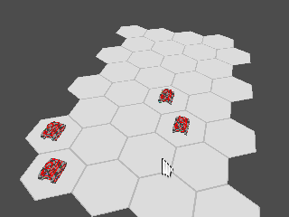
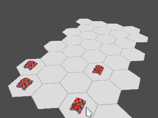

Пн 03 Март 2014
Так, что я сделал за эту неделю? Вообще, намного меньше, чем собирался :( .
Ну, во первых, решил делать вот эти самые еженедельные записи.
Портировал из старых прототипов базовое путенахождение, причем оно происходит не на сервере, а на клиенте, основываясь на знаниях клиента о мире. Т.е., если на пол пути окажется скрытый юнит, то путь через его клетку все равно будет проложен, а уже при симуляции команды на сервере случится сюрприз в виде засады.
Раньше:

Теперь:

Да, пока отряд никак не поворачивается при движении :( .
Немного привел в порядок gl_helpers, вынес из него типы Texture, Vao, Vbo и Shader. Ну и спрятал вызовы привязок gl внутри этих классов.
Разделил все исходники на директории core и visualizer. Позже, наверное, сделаю их отдельными единицами компиляции. К первому отходит весь код, который не требует визуализации, т.е. сама суть игры, а визуализатор занимается полученеи ввода от пользователя и показом картинки.
Постарался сделать так, что бы после вызова конструктора объекта он уже сразу был готов к использованию, а не ждал вызова init-подобного метода в неопределенном состоянии.
Добавил в интерфейс визуализаторов событий метод start для, очевидно, начала визуализации события.